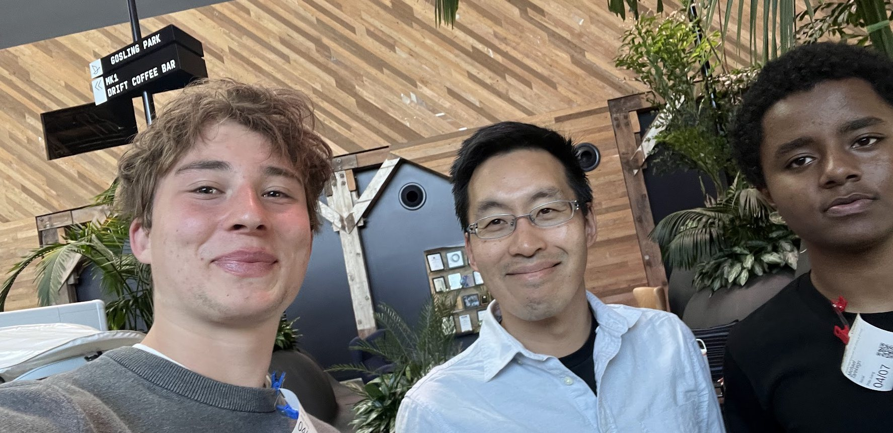

Classifier and results from the CompLLM, LangLLM and WLLFM studies. Adrian Erlikhman, Michael Tarekegn, Philo Juang. October 2026.
Files in the llm-attribution repository (private; collaborators only). ALGORITHMS.md has line-level links for every method.
